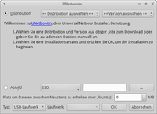

UNetbootin
Dieser Artikel wurde für die folgenden Ubuntu-Versionen getestet:
Dieser Artikel ist größtenteils für alle Ubuntu-Versionen gültig.
Zum Verständnis dieses Artikels sind folgende Seiten hilfreich:
UNetbootin  (Universal Netboot Installer) ist ein Programm, das man nutzt, um eine Linux/BSD-Distribution auf Rechnern ohne CD/DVD-Laufwerk mittels USB-Stick zu installieren. Das Installationsmedium kann dabei ein USB-Stick oder auch direkt eine Partition auf demselben Rechner sein.
(Universal Netboot Installer) ist ein Programm, das man nutzt, um eine Linux/BSD-Distribution auf Rechnern ohne CD/DVD-Laufwerk mittels USB-Stick zu installieren. Das Installationsmedium kann dabei ein USB-Stick oder auch direkt eine Partition auf demselben Rechner sein.
UNetbootin ist nicht nur für eine Installation hilfreich, denn mit dieser Anwendung ist es ebenfalls möglich, sich eine portable Live-Distribution zu erstellen. Wenn man diese Distribution beispielsweise auf einen USB-Stick installiert, kann man seine eigene Distribution überall mit hinnehmen und hat stets eine Linux-Installation zur Hand. UNetbootin liegt in einer Windows- und einer Linux-Version bereit und unterstützt neben Ubuntu eine Vielzahl von Distributionen, z.B. Fedora, Gentoo, Damn Small Linux, usw. Es kann auch auf ein bereits vorliegendes ISO-Image zurückgegriffen werden, um eine z.B. brandneue Distribution, die noch nicht direkt von UNetbootin unterstützt wird, zu installieren. UNetbootin ist auch für Windows erhältlich.
In diesem Artikel wird die Installation auf einen USB-Stick beschrieben, welche sich kaum von der Installation auf eine andere Partition unterscheidet.
Experten-Info:
Es können die offiziellen ISO-Abbilder von Ubuntu auch direkt mit dd auf ein externes Speichermedium geschrieben werden, da diese als Hybrid-ISO-Images bereitgestellt werden.
Ist die Verwendung auf einem Rechner mit einem EFI Bootmanagement vorgesehen, so wird die Anweisung EFI USB-Stick zur Erstellung eines bootfähigen USB-Stick empfohlen.
Installation¶
UNetbootin ist aus den offiziellen Paketquellen verfügbar [1]:
unetbootin (universe)
 mit apturl
mit apturl
Paketliste zum Kopieren:
sudo apt-get install unetbootin
sudo aptitude install unetbootin
Da das Programm noch ständig weiterentwickelt wird, steht zusätzlich ein "Personal Package Archiv" (PPA] [2] mit einer aktuelleren Version zur Verfügung.
PPA¶
Adresszeile zum Hinzufügen des PPAs:
ppa:gezakovacs/ppa
Hinweis!
Zusätzliche Fremdquellen können das System gefährden.
Ein PPA unterstützt nicht zwangsläufig alle Ubuntu-Versionen. Weitere Informationen sind der  PPA-Beschreibung des Eigentümers/Teams gezakovacs zu entnehmen.
PPA-Beschreibung des Eigentümers/Teams gezakovacs zu entnehmen.
Damit Pakete aus dem PPA genutzt werden können, müssen die Paketquellen neu eingelesen werden.
Nach dem Aktualisieren der Paketquellen erfolgt die Installation wie oben angegeben.
Partitionierung¶
Prinzipiell ist der Partitionstyp für die Installation egal. Es gibt allerdings Vor- und Nachteile bei den unterschiedlichen Typen. Das Linux-Standard-Format ext3 (oder auch ext2) kann von fast jedem Linux gelesen und beschrieben werden. Allerdings sind zum Schreiben Root-Privilegien erforderlich, da UNetbootin standardmäßig den Besitzer der Dateien auf Root festlegt (das zu ändern wird auch nicht empfohlen!). Außerdem kann auf den Stick dann von Windows aus nicht mehr zugegriffen werden (außer man hat einen ext-Treiber installiert, was auf den wenigsten Rechnern der Fall sein sollte).
Ein unproblematisches Format ist FAT. Hiervon gibt es verschiedene Ausprägungen, empfohlen wird VFAT32. Es kann sowohl von Windows als auch von Linux beschrieben werden. Eine Rechteverwaltung gibt es bei diesem Partitionstyp nicht. Allerdings gibt es verschiedene Einschränkungen für die maximale Partitionsgröße und die maximale Dateigröße.
Falls es Probleme beim Booten/Erkennung gibt, kann es nötig sein, der USB-Stick vor der Benutzung mit FAT32 (nicht FAT) neu zu formatieren, ansonsten kann ggf. von dem Stick nicht gebootet werden, und es erscheint unter Umständen keine Fehlermeldung, wodurch die Problemsuche erschwert wird.
Weiterhin ist darauf zu achten, dass für die Partition, auf die UNetbootin die Distribution installieren soll, das Boot-Flag gesetzt werden muss!
Verwendung ohne (U)EFI¶
Zum Partitionieren kann man die Programme GParted, GNU Parted oder fdisk verwenden. Es wird hierbei in der Regel eine Partition mit der lfd. Nummer eins erstellt (z.B. /dev/sdd1). Auf diese kann dann UNetbootin seine Daten schreiben.
Verwendung für (U)EFI¶
Um ein bootfähiges ISO für die Verwendung und Start in einem (U)EFI-Menü nutzen zu können (siehe auch EFI Bootmanagement), muss die Partitionierung des USB-Sticks an die Bedingungen der ursächlichen Verwendung als CD/DVD-ISO angepasst sein. Dazu wird ein Terminal [4] geöffnet, und man ermittelt die Informationen zum USB-Stick mit:
sudo blkid
Es wird beispielhaft /dev/sdd1 als Information / Ausgabe angenommen. Es wird vorsorglich der USB-Stick wieder ausgehängt mit:
sudo umount /dev/sdd1
Um eine neue Partitionstabelle anzulegen und sie auf den USB-Stick zu schreiben, werden die folgenden Befehle nacheinander eingegeben:
sudo fdisk -c /dev/sdd
Befehl (m für Hilfe): o
Befehl (m für Hilfe): w
Nun muss der USB-Stick (der jetzt eine einzelne Partition enthält) formatiert werden. Dazu gibt man ein:
sudo mkfs.vfat -I /dev/sdd
Mit diesem so vorbereiteten USB-Stick kann die Übertragung durch UNetbootin beginnen.
Hinweis:
Diese Partition wird unter GParted als nicht zugeteilt ausgewiesen - bitte nicht überformatieren oder einer Partition zuteilen! Im UNetbootin-Fenster wird dieser USB-Stick dann als Drive /dev/sdd angezeigt
Programm starten¶
Man kann das Programm über den Starter im Menü starten:
"Anwendungen > Systemwerkzeuge > UNetbootin"

Bedienung¶
Die Bedienung ist relativ einfach. Man hat drei Möglichkeiten, eine Distribution auf den USB-Stick zu installieren:
Man wählt sich eine Distribution und Version aus und überlässt UNetbootin den Rest.
Man übergibt ein CD-Image an UNetbootin. (Dies ist besonders praktisch, falls man schon das Image heruntergeladen hat, da man die gesamten Daten nicht noch einmal herunterladen muss.)
Man übergibt UNetbootin die Werte für den Kernel und Initrd.
Auswahl einer Distribution¶
Diese Möglichkeit ist die einfachste. Dazu wählt sich einfach eine Distribution und eine Version aus der der Liste aus. Nun zeigt UNetbootin noch die Homepage und eine kurze Beschreibung an.
Hinweis:
Die Version aus den offiziellen Paketquellen ist nicht ganz aktuell, es werden zum Teil noch alte, nicht mehr unterstützte Ubuntu-Versionen wie 6.06 und 8.04 angezeigt. Deshalb solltest du dieses Paket besser über die oben angegebene PPA installieren, wenn du diesen bequemen Weg wählst.
Falls man diese Möglichkeit nutzt, wird UNetbootin alle benötigten Dateien aus dem Internet herunterladen und diese anschließend auf dem Stick installieren. Es ist also eine bestehende Internetverbindung erforderlich. Die Datenmenge unterscheidet sich je nach Distribution, bei Ubuntu sind es etwa 700 MiB.
Auswahl eines CD-Images¶
Diese Möglichkeit bietet sich an, falls man bereits ein CD-Image der Distribution heruntergeladen hat. Hier gibt man einfach das CD-Image an, und UNetbootin versucht dieses Image in passender Form auf dem Stick abzulegen. Außerdem lassen sich so meist auch brandneue Versionen der Distributionen testen, welche UNetbootin noch nicht direkt herunterladen kann.
Je nach CD-Image, ob es sich um eine Live-CD bzw. eine Alternate-CD handelt, sind entsprechende Nacharbeiten erforderlich. Eine Alternate-CD kann auch mit dem Tool usb-creator verarbeitet werden.
Auswahl der Kerneleinstellungen¶
Jede Distribution bietet meist einen Kernel an, mit dem die Distribution installiert werden kann. Dieser Weg variiert von Distribution zu Distribution.
Experten-Info:
Dieser Weg ist nur für Fortgeschrittene empfehlenswert. Die anderen beiden Möglichkeiten sind einfacher.
Daten auf den Stick schreiben¶
Als Letztes wählt man im unteren Bereich die Partition aus, auf welche UNetbootin die Distribution installieren soll.
Achtung!
An dieser Stelle sollte man die Auswahl doppelt überprüfen, damit keine Partition versehentlich überschrieben wird!
Mit einem Klick auf "OK" beginnt UNetbootin mit der Installation.
Boot-Optionen anpassen¶
Die Einstellungen für eine sogenannte Live-CD bzw Install/Alternate-CD weichen wegen ihrer Verwendung in den Kernel-Optionen voneinander ab. Dazu wird auf dem USB-Stick u.a. die Datei syslinux.cfg angelegt, die für das Starten des Systems verantwortlich ist.
Hinweis:
Für den Start auf einem UEFI Computer-System werden die relevanten Dateien zusätzlich auf dem fertigen USB-Stick in der Datei /boot/grub/grub.cfg abgelegt. Diese Datei kann man in gleicher Weise wie nachfolgend beschrieben umgestalten.
Datei syslinux.cfg Live-CD¶
In der Regel wird ein englisch-sprachiges System und eine US-Tastatur als Vorgabe angelegt. Die Datei syslinux.cfg kann man auf seine Bedürfnisse anpassen, indem man diese mit einem Editor [3] bearbeitet. Die Zeile mit:
append initrd=/ubninit file=/cdrom/preseed/ubuntu.seed boot=caspar --
wird vor dem Doppel-Minus für ein deutsches Layout wie folgt ergänzt:
locale=de_DE bootkbd=de console-setup/layoutcode=de
Experten-Info:
Will man eigene Daten auf dem Desktop verfügbar haben, so kann man dafür zusätzlichen eigenen Ordner anlegen und dort alles hineinkopieren (z.B. WLan-Schlüssel, Scripte, spezielle Pakete etc). Dieser Ordner kann vom Live-Desktop aus (als Beispiel /cdrom/Meine_Daten ) ausgelesen werden.
Datei syslinux.cfg Alternate-CD¶
Nach der Erstellung durch UNetbootin muss man die Datei syslinux.cfg anpassen. Dazu öffnet man die Datei syslinux.cfg mit einem Editor [3] seiner Wahl, löscht den gesamten Inhalt und kopiert das Folgende in diese Datei:
1 2 3 4 5 6 7 8 9 | default vesamenu.c32 prompt 0 menu title UNetbootin timeout 100 label unetbootindefault menu label Default kernel /ubnkern noprompt cdrom-detect/try-usb=true file=/cdrom/preseed/ubuntu.seed append initrd=/ubninit vga=normal quiet -- |
Danach passt man im neu eingefügten Text bei den Kerneloptionen die Zeichenfolge ubuntu:
| kernel /ubnkern... file=/cdrom/preseed/ubuntu.seed |
an die jeweilige distributions-abhängige Dateibezeichnung, wie sie auf dem USB-Stick im Verzeichnis /preseed steht, an. Beispiel: lubuntu oder kubuntu o. Ä.
Um die Sprach- und Tastatur-Auswahl zu überspringen, kann man zwischen quiet und -- für ein deutsches Layout wie folgt ergänzen:
locale=de_DE bootkbd=de console-setup/layoutcode=de
Nach dem Abspeichern ist eine Installation über den so vorbereiteten USB-Stick nach dem Booten möglich.
Installation auf Festplatten-Partitionen¶
Anstatt auf einen USB-Stick kann man mit UNetbootin auch auf jede andere Partition die Distribution installieren. Dazu einfach den Haken bei "Show All Drives (Use with Care)" setzen.
Achtung!
An dieser Stelle sollte man die Auswahl doppelt überprüfen, damit keine Partition versehentlich überschrieben wird!
Installation des Bootloaders¶
Eine Installation des Bootloaders ist nicht erforderlich, da UNetbootin diesen automatisch in die gewählte Partition installiert.
Booten des neuen Systems¶
Der Rechner muss dazu das Booten von USB-Medien unterstützen. Entweder kann man beim Booten das Startmedium auswählen (z.B. mit der Taste F11 oder F12 ) oder man muss im Bios das USB-Medium als erstes Boot-Gerät einstellen. Dies funktioniert allerdings bei jedem Bios unterschiedlich. Meist öffnet man die Bios-Einstellung während des Bootvorgangs mit der Taste F2 oder Entf
Nach dem Bootvorgang sollte das UNetbootin-Auswahlmenü erscheinen. Hier kann man den gewünschten Eintrag auswählen und das System vom Stick booten.
Es ist zweckmäßig, nur einen USB-Stick anzuschließen, da einige Bios nur einen USB-Stick erkennen.
Erscheint das Auswahlmenü nicht, sondern nur eine Fehlermeldung der Art Error: No configuration file found obwohl die Konfigurationsdatei syslinux.cfg vorhanden ist, dann hat das Bios des Computers Schwierigkeiten mit dem Dateisystem (Fat32) des Usb-Sticks. Der Stick sollte in Fat16 formatiert werden. Um den Stick in Fat16 zu formatieren, kann man z. B. GParted verwenden. Wenn der Stick größer als 4 GB ist, muss man die Partition mit z. B. GParted auf 4 GB verkleinern, anschließend mit Fat16 formatieren und mit UNetbootin die Ubuntu-Installationsdateien erneut aufspielen.
Benutzung des Live-Systems¶
Das System ist ein ganz normales Live-System und ist in dem Artikel der Live-CD beschrieben. Um Ubuntu von dem System zu installieren, kann man dem Artikel der Ubuntu Installation folgen.
Installation von Ubuntu vom Live-System¶
Zur Installation wird ubiquity genutzt. Bei der Benutzung dieses Tools treten mitunter Probleme auf. Um diese Probleme zu umgehen, wird empfohlen, dass ubiquity vor einer Installation aktualisiert wird. Dies kann man bequem erledigen, indem man die Paketlisten aktualisiert und ubiquity erneut installiert. Die Befehle im Terminal [4] würden folgendermaßen lauten:
sudo apt-get update && sudo apt-get install ubiquity --reinstall
Ein funktionierender Internetzugang wird vorausgesetzt.
Links¶
Extern¶
Unetbootin
- Wikipediahttp://www.pendrivelinux.com/put-lucid-puppy-on-usb-flash-drive-from-windows mehr als 4 GB Persistente Datei, hilfreich um z.b. Entwicklerversionen von Ubuntu zu testen.
- Erstellt mit Inyoka
-
 2004 – 2017 ubuntuusers.de • Einige Rechte vorbehalten
2004 – 2017 ubuntuusers.de • Einige Rechte vorbehalten
Lizenz • Kontakt • Datenschutz • Impressum • Serverstatus -
Serverhousing gespendet von